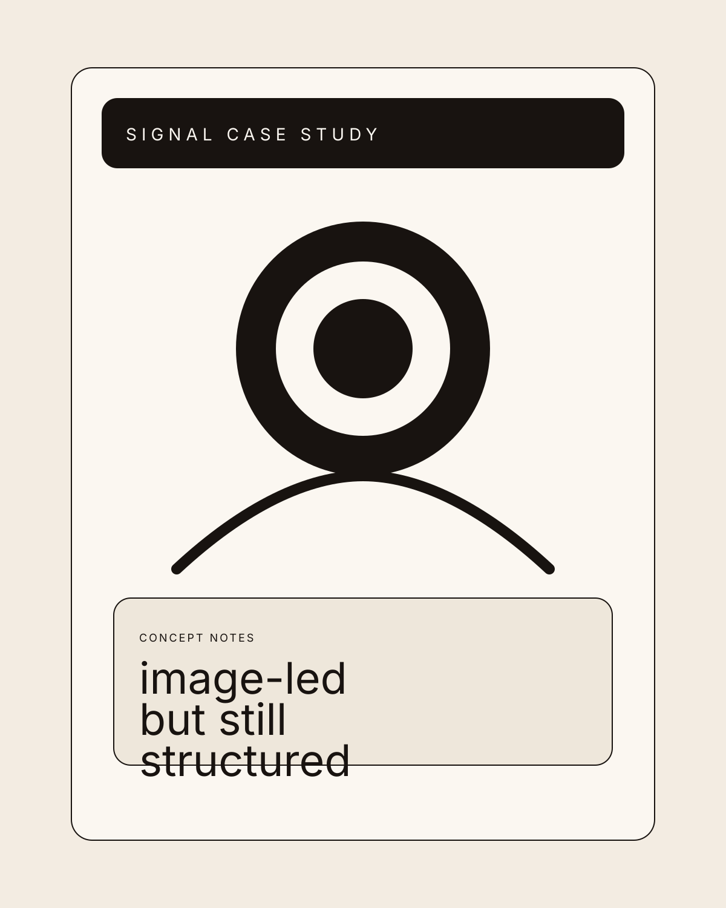

Wellness practice
A slower ritual system for modern nervous systems.
Canopy Ritual combines guided sessions, daily journaling, mood-aware routines, and community prompts to help people reset without chasing optimization theater.

Design thesis
Wellness without the usual softness clichés.
This page uses more space, warmer pacing, and a calmer material language, but it still keeps proof and product clarity visible.
Ritual system
Small practices arranged like a real rhythm, not a challenge app.
Wake
Start with a body check
Brief somatic prompts help users notice state before they force a routine onto themselves.
Midday
Reset with guided softness
Short restorative sessions create a pressure release without demanding high discipline.
Night
Close the day with reflection
Journal structure is tuned for pattern recognition, not productivity vanity metrics.
Journal layer
Reflection feels tactile, private, and intentionally unhurried.
The product stage uses softer section transitions and bigger quiet spaces, but still avoids generic wellness gradients and floating blobs.
Prompts
Context-aware writing
Questions shift based on user state instead of recycling the same journaling script.
Signals
Mood patterns over time
Visual summaries stay calm and useful instead of turning emotion into dashboard fetishism.
Audio
Breath-led guidance
Short guided sessions create a bridge between reflection and regulation.
Community
Optional, not performative
Shared rituals exist for support, not for streak pressure or social scorekeeping.
Member note
"It feels like the app is making room for me instead of asking me to optimize myself."
That line becomes the design center: softer pacing, fewer noisy metrics, and more trust in calm surfaces.
Member story
"The journal finally helped me notice patterns instead of just vent."
Users respond to the way the writing prompts build continuity instead of chasing empty inspiration.
Practitioner note
"It is gentle without becoming vague."
The ritual structure keeps enough scaffolding for behavior change while staying emotionally soft.
Community lead
"The product never turns care into a gamified performance."
That restraint is part of why users keep trusting the system over time.
Daily rituals and journal flow
Designed for people building a steadier morning and evening rhythm.
Guided sessions and deeper prompts
Includes the calmer audio library, deeper check-ins, and longer weekly reflection threads.
Community rituals and practitioner events
A slower, more intimate group structure for users who want shared rhythm without performance pressure.